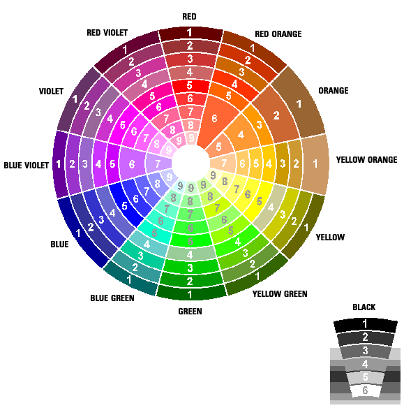
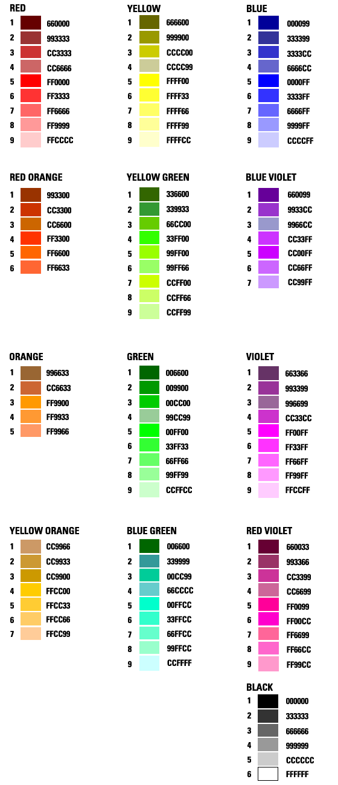

Graphics and Color
Browser Safe Colors
- Although many browsers and monitors can display a wide array of colors -
there are only 217 colors that are guaranteed to display the same way on every
browser.


Updated October 2, 2003
Dawn G. Gregg
Portions of this lecture were obtained from:
http://www.inherent.com/tools/colortheory101/home.cfm